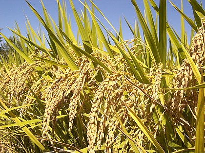
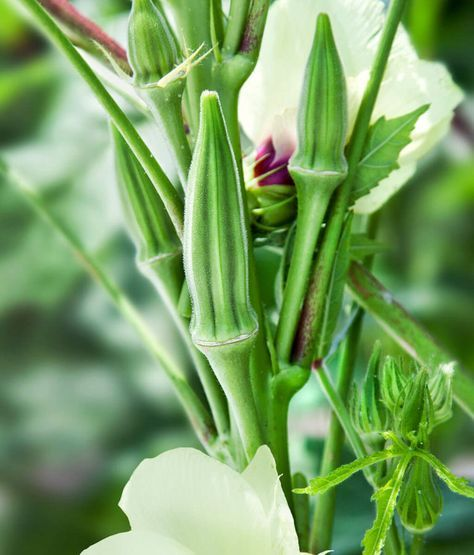
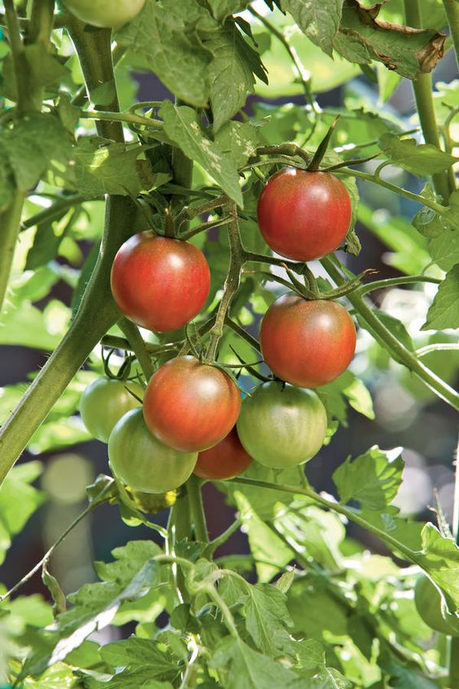

يعد التمر أو الرطب من أهم المحاصيل المميزة في مدينة الاحساء بشرق المملكة بل ومن اهم المحاصيل الزراعية في المملكة بشكل عام، ومن أشهر أنواع الرطب هو الطيار والهلالي والحاتمي والبرحي

الأرز الحساوي
يعد الأرز الحساوي من أبرز المحاصيل في المنطقة الشرقية وهو ثاني اكبر انتاج محاصيل من بعد محاصيل النخيل ويعبتر الأرز الحساوي أغلى أنواع الأرز, حتى أنه يحظى ببورصه خاصة به

البامية
تشتهر المنطقة الشرقية بزراعة البامية الحساوية وتعد البامية إحدى الخضروات الحوليّة الموسميّة التي تنمو في الجو الدافئ، وهي نباتٌ مستقيمٌ يرتفع من 91 إلى 183 سنتيمتراً أو أكثر

الطماطم
ويسمى بالطماطم الحساوي ويتميز عن باقي الطماطم بطعمه الحلو ولونه الزاهي فهو يمزج بين الحمرة والصفرة والخضرة